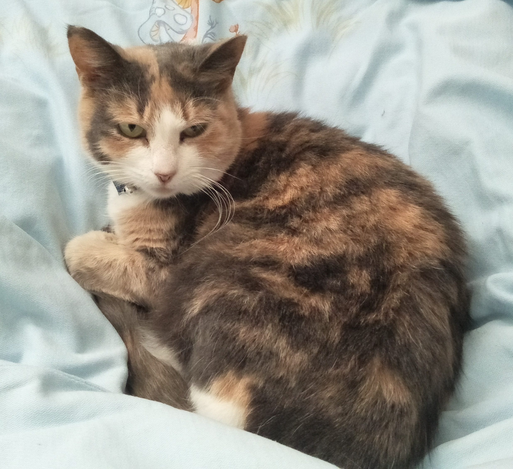

Our Profiles
Emma Sun Website link
S3812428
emmmasun@hotmail.com
Current qualifications:
Bachelor of Biomedicine Majoring in Cell and Developmental Biology
WWCC, RSA, Police check, Cert II in Hospitality and Tourism.
In progress:
Bachelor of Information Technology
Australian born Chinese, can speak English, Shanghainese and Mandarin. I have an older brother and two little nieces who are little devils. Have a cat called Sprinkles, hobbies are arts and crafts such as making props and stuff. I also enjoy gaming in spare time. Interested in UX and Cyber Security but have minimal experience in IT - just started this semester.
My ideal job was in Cyber Security, perhaps starting as a Penetration tester which requires lower qualifications of a bachelor or diploma to enter and one can work up towards cyber security analyst from there. However, I am enjoying the current intro course in UCD so maybe a job in UX would be interesting too, although I don’t know if that would involve a lot of stats or not.
Joe Zhou Website link
S3798529
Current qualifications:
Sql, python, java,C, C#
In progress:
Bachelor of IT.
Born in China, I am currently studying in RMIT majoring in Information Technology. Before that, I have already learnt about IT for 2 years in China which let me have a basic understanding of IT industry. Personally, I am a huge fan of Japanese animation. For that reason, I studied Japanese for a few years. Therefore, I can speak some basic Japanese for simple communications. I like to watch TV dramas as well.
My ideal job is to be a data analyst. I am always interested in managing data and analyse them into some meaningful trends or patterns in order to make certain improvements to decisions of company. To step in this field, it is better for me to gain an entry level position like a statistical assistant. To be qualified, I still need to achieve my bachelor’s degree first and have some internship to gain data analyst experience.
Binh An Nguyen Website link
S3721555
In progress:
Bachelor of Information Technology
I am currently studying a Bachelor of Information Technology. My most recently qualification is year 12 VCE. Australian born Vietnamese can speak fluent English and Vietnamese. H obbies include playing video games and watching anime. Interested in programming and databases.
My ideal job is to be a web developer. A web developer has a role in designing and creating websites, they are particularly responsible for ensuring that the whole aesthetics of the overall website is appealing. In addition, a web developer will utilise a variety of programming languages such as java, CSS, html etc. These traits as a web developer appeal to me as I enjoy having the ability to customise a website.
Umer Tariq Website link
S3782874
In progress:
Bachelor of Information Technology
I am currently studying Bachelor of computer science. My most recent qualification is year 12. I have also done certificate 2 in security operations. I was born in Pakistan and moved to Australia 3 years back. I can speak Urdu, Hindi, Punjabi and English. I am interested in Cyber security. My hobbies are playing cricket, watching television series
My ideal job is cyber security analyst, I liked this side of modern technology from the very beginning. It requires a bachelor's degree in computer science or information technology with at least 5 years of experience.
Jordan Aguila
s3871006
In progress:
Bachelor of Information Technology
I am Chilean and Spanish. I like music and I play the guitar and enjoy playing gigs. I grew up surrounded by technology and therefore have long had an interest in IT. I also studied IT in high school.
My ideal Job is game developer I’ve always been interested in games and how they function since I was a kid and I’m highly interested in different code languages such as java and c++ and I would like to at least get an entry position or internship just to see how the industry works
Career plans: The career plans for our group are still same. Emma and Umer wants to carry on with cyber security, Jordan wants to become software developer, Joe is still interested to become data analyst and An’s dream is to become a Web developer. Even after the feedback from assignments 1 & 2 career are plans are still same as they were. The common elements include that we should know programming languages and have experience in relative fields. The demands and role in each field differentiates it from the other field. Emma’s and Umer’s fields are same as they both wants to become cyber security analyst. Jordan’s and An’s career plan are similar but different as Jordan wants to become software developer and An wants to become web developer. Software developer develops software and web developer is software engineer who only builds web applications. Joe’s career plan is completely different to all as he wants to become the data analyst. . Our job interests vary from data analysis to game developer to cyber security analyst etc. The skills and qualifications for these jobs are also varied. Common to all these jobs would be the ability to work with others and knowledge of how IT systems function either in coding or hardware level. All these jobs also require come level of certification or degree to enter and most require prior years of experience.